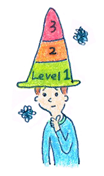

6 : コミュニケーションに関する悩みの難易度を解説
・悩みの難易度を知ろう！
ここまでお付き合い頂きましてありがとうございます。
コミュニケーション能力トレーニングの知識編については、ここでいったん一区切りにします。
あんまりくどくど説明していると皆さんどこかに行ってしまうと思うので笑
最後にお伝えするのは、コミュニケーション能力の改善がしやすい分野と難しい分野の目安です。

これからお伝えするコミュニケーション能力を改善する難易度は、に基づいています。
研究する身分としては、全て統計的なエビデンスを元に書きたいところですが、多岐に渡るため現実的に不可能です。 そのため、私の主観が入ってしまうことはご了承頂けると幸いです。
また個人レベルで、難易度は変わってきますし、例外はいくらでもあると思いますのであくまで参考程度にお使いください。
それでは、コミュニケーション能力の改善が難しい分野と、改善が可能な分野についてまとめます。 まとまりがなく、ブレストしたような感じですが、参考にしてみてください。
・難易度高 ～改善は正直難しい～
完全に改善できないとは言い切れませんが、コミュニケーション能力の改善はかなり難しい分野です。現実的にはは無理なコミュニケーション能力の改善は目指さず、「受け入れる姿勢が大事」になってきます。付き合っていくぐらいの気持ちで良いと思います。
・難易度中 ～努力次第で改善も～
身体的なトレーニングで改善する分野は、努力次第である程度コミュニケーション能力の改善ができるでしょう。根本的な部分については難しいですが、余裕があるときは努力していきたいころです。
講座では、気質を否定せず受入れながら行動するトレーニングを行います。
さまざまなスキルを学び、コミュニケーション能力を伸ばしていきます。
・難易度低 ～改善しやすい！是非努力を！～
・単純な場面、目的がはっきりとした場面での会話
努力次第である程度コミュニケーション能力の改善できます。私の修士論文の研究でもある程度統計的に効果がありました。こちらは具体的なトレーングで改善がしやすいです。
具体的には、
講座では、場面にあった具体的なトレーニング方法をとりいれ進めています。
・次回からは具体的なトレーニングに入ります
以上で、コミュニケーション能力トレーニング知識編は終わりです。
ここまで読んで頂いた方ありがとうございました。 少し混乱された方もいらっしゃると思うので、改めて全体をまとめて知識編を終わりたいと思います。
・心理学を学ぶのが近道
・実践練習も大事
・受け入れるのか？改善するのか？の判断は難しい
・難易度を把握してできるところから努力
次回からは、コミュニケーション能力を高める具体的なトレーニングを交えながら進めていきます。 一緒にコツコツいきましょう！！
 |
|